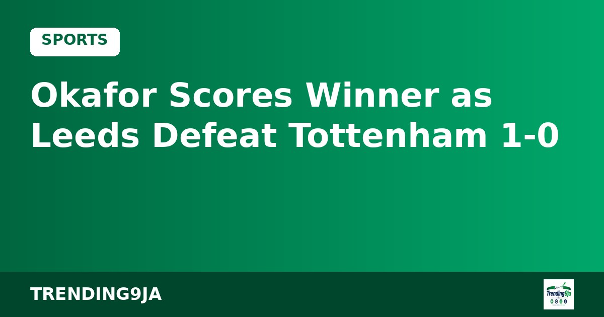

EPL: Jamie Redknapp Names Brighton as Arsenal's Main Title Rivals
Jamie Redknapp has tipped Brighton as Arsenal's main Premier League title contenders following Manchester City's recent slump, according to Daily Post.

Manchester United staged a dramatic late comeback to secure a 4-4 draw against Aston Villa at Old Trafford on Sunday, according to Punch. The hosts scored twice during six minutes of added time to salvage a point in an intense Premier League encounter.
Aston Villa took control early by scoring twice within the opening four minutes. Alysson put the visitors ahead in the first minute after his effort slipped past United goalkeeper Senne Lammens, while Nicolas Jackson added a second shortly after. Bruno Fernandes pulled one back with a 16th-minute penalty, before Youri Tielemans restored parity shortly before half-time.
The away side went back in front shortly after the restart. John McGinn converted a 48th-minute penalty after Diogo Dalot committed a foul in the box, and Leon Goretzka poked home Villa's fourth goal five minutes later to extend their lead to 4-2.
United fought back in stoppage time to deny Villa all three points. Joshua Zirkzee found the net deep into injury time, and Patrick Dorgu headed in a dramatic equaliser in the final seconds after Villa goalkeeper Zion Suzuki failed to clear cleanly.
According to Punch, the dramatic draw leaves United manager Michael Carrick under continued pressure. United remain winless in their past eight league matches and sit in the relegation zone ahead of their upcoming fixture against Liverpool.
Sources: Punch
← More Sports stories
Jamie Redknapp has tipped Brighton as Arsenal's main Premier League title contenders following Manchester City's recent slump, according to Daily Post.
Samson Adamu has made history as the first Nigerian appointed substantive General Secretary of the Confederation of African Football.

Noah Okafor came off the bench to score the decisive goal as Leeds United ended Tottenham Hotspur's three-match winning streak with a 1-0 Premier League victory.
Nigeria's trending news, politics and entertainment, straight to your email.
By subscribing you agree to our Privacy Policy. Unsubscribe any time.